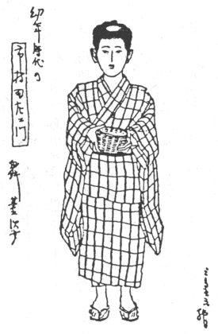
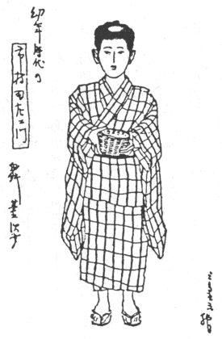

市村羽左衛門の芸の質についての研究が、此頃やつと初まつたやうである。何にしても、此は嬉しいことだ。歌舞妓芝居のある一つの傾向は、これで追求せられて、その意義がわかつて来るだらうと思ふ。
なぜ、羽左衛門が、権八や菊之助乃至は久我之助・桜丸の類の役柄に扮し勝ちであつたか。又、直次郎や、新三や、さうかと思ふと梅吉（加賀鳶）・佐七の、小善小悪にあがく市井の人々になつたのか。もつと言へば、実盛・盛綱・景時の類型から飛躍して、板倉内膳・桃井若狭・富樫などを以て、その役どころとしたか。此等、歌舞妓芝居の約束を知つたものには、ほんの何でもないことが、恐らく新しい問題となつて来るだらうと思ふ。
明治廿六年三月、歌舞伎座では福地桜痴の「
此時、本文の対象にしてゐる市村羽左衛門は、まだ市村座の若太夫名竹松で一座に居た。「目黒新富士」と言ふ近藤重蔵を書いた新作狂言に、
この興行半に家橘は病気休みをして、其まゝ起たなくなつた。危篤に陥つた時、兄は公暁で、歌舞伎座の舞台に立つて居た。臨終の床に駈けつけた兄の、死者に対してくどき歎いた詞と、驚きにをろ／＼して居た甥を膝もとにひきつけて言つた詞と、二つは今もどうかすると、話の種にしてゐる年よりがある位である。弟思ひの美談として伝つてゐるのであるが、此は或は、兄菊五郎の深い悔いから出たことなのかも知れぬ。五十五年たつた今から、静かに思へば、世のはらからの、せむすべもない思ひが、目の前に浮んで来る様だ。私どもゝ、唯の弟思ひ、兄思ひの兄弟なかの悲しい幸福の物語として考へて居た。
その後私に教へてくれた多くの先輩の話を綜合すると、この兄は可なり弟には激しかつた。その証拠には、骨肉の間でありながら、互に助勢しあつて、おなじ興行に一座することが稀だつたと言ふ。併し此証拠は必しも、真実ではなかつた。兄弟は晩年繁しげと、一座して顔合せはして居たのであつた。此は、興行年表を作つて見た上で、私は言ふのである。だが、其が兄弟仲の円く行つて居たことにはならぬ。寧、さう言ふいさかひ、仲違ひの続いた間に、突如として弟の死に遭うた兄の狼狽・慚愧の情は、可なりやるせないものであつたらうと思はれる。素人の間では、少し表現の勝つた言ひ方だと思はれる菊五郎の弟甥に対しての詞も、役者が聴きてを意識し乍ら、開き直つて言ふとすれば、さうした過度の感激が表白せられるのも、無理はないと思ふ。義理人情を弁へ、達意に物を言ふ菊五郎である。悲しみに傷れても、其位のことは言ふ筈だ。そこに却て役者らしい生活が見られる。誉当の息子については、よしあしを伝へてゐぬが、其二月前、市村座の一月狂言の「
元服期を過ぎた十六七歳からの重な役わりについて見ると、廿三年桐座の「め組の喧嘩」にやんま豊など言ふらちもない役がついて居る。尤、父家橘が藤松を勤めて居た程だが、其時の辰五郎の女房お仲は、後に老い女房としてつきあつた源之助であつた。同年春木座で八百蔵の真龍軒に其倅として出勤し、又松前屋の丁稚卯之助などゝいふ役を与へられてゐる。又、「千本桜」が出ると、八百蔵が忠信で彼は鮓屋のお里を勤めて居るから、まづ役は暴劣してゐる訣ではないが、此は権太――家橘の役の引き立てによるものと見ねばならぬ。其年から翌年にかけて、父について寿座へ出て、「盛綱館」に注進の藤太をしてゐる。勿論盛綱の威光によるのである。十七歳には、「妹背山」山の段の雛鳥を勤めてゐるが、比較をとつて見ると、やはりお三輪は、沢村源之助の役である。年の隔りが思はれるではないか。其年には、歌舞伎座で、道行のおかるを踊つてゐる。相手には、後の幸四郎当時の染五郎が勘平に廻つてゐる。此などは、後年までつりあつた感じのする役である。同様の配役で、やゝ複雑味のうけとれるのは、翌年春木座の「薄雪物語」に、園部左衛門の芝雀――後、雀右衛門――に、薄雪姫といふ役廻りである。此配役、後年の役方と、すつかりふり替つてしまつて居る感じが深い。芝雀は元、立役に向ふ筈の家に養はれた人でもあり、芸質もさう言ふ傾向にあつたのだが、養父雀右衛門歿後女形に転じたのである。――尚考へると当時芝雀はまだ笑太郎であつたかも知れぬと言ふ気もする。さうすれば、此芝雀は今一つ前の者とも思はれるが、しばらく後年雀右衛門になつた芝雀と定めておく――芝居の「薄雪」何と言つても、左衛門の方が役は上である。仮名草子・浄瑠璃・歌舞妓と、姫の役柄に育てゝ来て、芝居の薄雪姫は、所謂「しびれ姫」と謂はれる娘形の役どころと違つた所がなくなつて来て居るからである。おなじ時の二番目では、「野晒悟助」の
数年前、今の菊五郎が、人をしてはつとさせる様なことを言つた問題がある。
羽左衛門のせりふ廻しを生世話であるとする通説を否定して、「時代世話」だとした。きはめて簡明な分類をしたものである。彼の芸風を生世話でないと主張したのではなかつた。けれども、彼を愛する人々は、彼が時代世話式に演じてゐないと謂はれたやうな印象を受けた。言ひたいことを言ふ菊五郎に対して憤りを感じた人々もあつたのは事実である。なる程さう思つて見れば、彼の「浜松屋店先」の弁天小僧、「源氏店」の切られ与三、「大川端」のお嬢吉三、「鈴ヶ森」の権八その他で、張りあげる所謂「やくはらひ」の発声法などは、確かに、時代風であり、世話のうちに時代のある芸風だと言ふ風に理会は出来る。併し凡江戸の町で育つた歌舞妓狂言である以上、やくはらひの様式は定まつて居る。其くだりになつて開き直つて、高音を張ると謂つた態度の初心らしさを避けて、出来るだけ内的に演じようとして居ることは、彼においても明らかに見られた事実だ。が、元々「やくはらひ」せりふが、さう言ふ様式のものである以上、全然約束を避けて、平談座語調子では演ずる訣にはいかぬのである。歌舞妓の世話狂言の中から化成して出たやうな菊五郎が、こんな点で羽左衛門芸質の時代世話を論じたのでないことは、言ふまでもなからう。が、やはり彼のえろきゆうしよんを純世話物式でないと言つたとすれば、問題の焦点と言ふよりも、菊五郎によつて暗示せられた羽左衛門芸術の解釈の緒口は、やつぱり此点に求めるのが、本たうであらう。若しあの当時の伝へが正しい伝へなら、菊五郎の言つたことは、却て羽左衛門の時代物から、あの立言がなされたものと見てよいと思ふ。羽左衛門のしてとなつた時代物では、吾々は何時見ても、鮮やかな斬新性を感じたものである。時としては、わき方に廻つてゐる場合でも、自らして風な位置をとる場合が、度々ある。殊に歌舞妓芝居のやうに、
岡本綺堂さんの作物を具体化したのは市川左団次の力である。さう言ふ事業の上に、新歌舞妓と言ふ快い名が与へられてゐる。だがよく考へてみると、世に謂ふ新歌舞妓は、かう言ふ簡明な筋立ての上に、近代劇の匂ひを持たせたやうなあの内容をさして言つて居たものではなかつたらうと、今になつて心づくのである。実際、彼の時代物を見てゐると、様式は凡彼自ら
彼の芸質に、時代物の味ひを濃く感じた菊五郎の率直な語は、その世話物よりも、却て時代物から受けた印象を、世話物の上に落して見たものではないか。さうして見ると、菊之助も、与三も、権八も、吉三も皆新歌舞妓と言ふべき感覚を吾々に寄せてゐたのである。さうした古くして新しい歌舞妓味を、「時代」と言ふ従来の用語例で受けとつたのが、菊五郎だつたといふことになる。とにもかくにも、「どうま声」で、すべての舞台感覚を喪失したやうな発声――之を彼の久しい友であつた先輩も、だゞつ子調子と言ふ語を以て、若い明治の世代における彼を表現して聞かされた。この語の持つ批判の向うに含まれた、長い友情と、愛護の誠意とが窺はれて懐しかつた。その若いどうま声を練りあげ、だゞつ子調子を鍛へあげたのが、彼一流の朗読術だつたのである。勉強を予めせない、出たとこ勝負だと思はれて来た彼の後半生にも、尠くともこれだけの苦心はして来てゐるのである。
鍛錬せられた晩年のせりふの間にも残つて居た一抹の影、稍うら枯れたやうな鼻にかゝる音色が、あくせんとにかゝる点に顕れて、ふと声調の調和を破らうとして、再元に立ち直る人
左団次の芸に思想性を挙げようとする人も多いだらう。だが、私などは、彼の芸は独自の思想を発現するだけの芸の自在境には到達して居なかつたと思うてゐる。単純な左団次の芸も今にして思へば、可なり複雑な内容を持つて居た。だが、彼の所謂新歌舞妓と謂はれるものも、結局は科白術に生命があつたのである。尠くとも、左団次に対する同情の牽かれる所は、あの息長く、脈動する様にあやつられたせりふ廻しに、誘惑があつたのである。併し恐らく、左団次式な対話も、独白も、左団次式になればなるほど、現実離れの激しくなつて行くことが感じられた。生きた人間のする発声法でなかつたことは確かである。併し演劇上の話術としては、一つの領域を開くことの出来たのは、疑ひがない。
すべての演劇に非現実の許されてよいことは、如何なる自然主義・現実主義からも認められるだらう。が、演劇の持つ現実の領域は実人生が望む所の現実であつて、吾々が知り悉したこの現実に限られたことではない。吾々の平常生活には、まだ実現せられてゐない未来の現実と云ふべきものが、吾々の経験の向うに充満してゐるのである。其を具体化し、吾々の生活様式として行く期待を、其こそ、演劇の上にかけて居るのだ、と言つてよい。幾多の近代劇・新劇が、さうした未来の現実を目的として書かれて居ないだらうか。さう言ふことを考へれば、現実離れしたせりふ廻しの問題などは、極めて小さい、問題にもならぬものに過ぎない。其だけは容易に認められてよい問題なのである。事実、歌舞妓芝居のせりふは皆此点に問題があり、歌舞妓の性質の上から、問題とならずに過ぎて来たのであつた。唯左団次の場合、歌舞妓式の手法は、すべて認容して居たが、彼の立ち場の上から、幼稚な演劇理論の時代には、問題になり易い、非現実性が、目についたといふまでゞある。羽左衛門にして見れば、平常の現実性を超越してゐる事は、左団次とかはることはないが、其を問題とせぬ彼の故に、人も亦自ら、そこに問題を覚えなかつたのである。吾々は、此二人の行き方の上に、歌舞妓の新しい領域は、どちらに求めて行つてよいものかと言ふ暗示が、既に動いて居たやうな気がする。
恐らく日本の歌舞妓芝居ほど語と声との訓練を問題にせなかつた演劇も珍しい。尠くとも、さう外見には見えるのである。此ほど悪声や、地方音や、音勢の標準を求めることに無関心だつた劇も、稀だらうと思ふ。果して、声語について深く注意が行はれたことが、長い歌舞妓史の上になかつたか。此事は自ら、問題が別になる。
世間伝へる所では家橘の死んだ其日（三月十八日）直に坂東竹松を、市村家橘に改めたことになつて居る。伯父五代目菊五郎が、とり計つたことだと言ふ。家橘の名の暫らくでも耳に出来ぬことが寂しいので、即座に竹松に襲名させたのだと言ふのである。だが勿論、役者としての改名は、襲名披露にはじまるのだから、七月十四日以後のことになる。此時中幕に「
家橘を失つた寂寥を我童を以て補つた、東京歌舞妓は、やがて我童の死にあつて贖ひ難い欠陥を持つ様になるのである。
だから、東京根生ひの二枚目役者と言へば、かう見て来ると、どうしても家橘一人と言ふことになるのであつた。遥かに年を経て、守田勘弥が出て来て、はじめて長い不足は補はれるのである。而も勘弥は風格に於いては、和事に最上の適任感を持たせたが、気稟はつゝころばしではなかつた。先輩羽左衛門が、気稟においては、絶好の二枚目の濡事師でありながら、風格が必しも和事的でなかつた点なども、芸の地方性と言ふことを思はずに居られない。
父は坂東家橘であつたが子は市村を名のつた。此には、一家一門の間に、深刻な経済事情があつたことが思はれる。其にも繋らず、此新家橘は市村姓が負担する所の重い債務にも圧しつぶされることなく、或は長閑に、或は恣なと見えた一生へ向けて、新しい発足点を踏み出すことになるのである。
羽左衛門の坂東家に入つたのは、存外年が長けてからである。明治十三年四月十日発行の「歌舞伎新報」雑報には、かう言ふ風に伝へて居る。
新富座の坂東家橘は、此ほど養子をある方より貰ひうけ名も幼名の竹松と名乗せその歓びと弘めかた／″＼彼是真翁が筆の扇子をそへ赤飯をそれ／″＼へ配りさる三日より五日までの間だ同座其外知己のものを凡そ二百人ほど自宅へ招き会席料理の馳走をしたといふ――右、六十八号
藁の上から引きとられるのゝ多い役者の養子の中で此は相当に遅い方である。七つと言へば、十分物心もついて、実家についての知識も持つて居たことゝ思ふ。彼が出た家については、今にして明らかに知つて置かねばならぬ問題もある。此については、私どもの知識と、尊敬する先輩たちの示教とは、大分懸け離れてゐた。美しい羽左衛門の生涯の為に今一度この事は折り返して考へを書く。が、ともかく幸福な幼時を過して来た子であつたには違ひない。唯、吾々傍観者にとつて、わからぬことは、四月に役者の家の子となつたばかりの少年が、もう其年の十一月には初舞台に立つたことである。此年新富座の興行履歴は、三月・六月とあつて、十一月六日、謂はゞ顔見世月になつて、三の替りを開場した訣である。此時、二番目の「鬘に隠れる髪の色も、白粉を塗るまでもなく透きとほる様な膚も、第一に濃い
翌十四年、新富座の正月興行である。忠臣蔵一日替りの例にならつて、「手習鑑」と「千本桜」との一日替りと言ふ頗繁雑な立て方であつた。役者は、立て者たちにおいては、昨年と変りのない大一座であつた。其うち、竹松は、「木の実」及び「鮓屋」の場に、六代御前として、二度目の舞台に上つて居る。とにもかくにも此時、正しい歌舞妓狂言を、役者としてはじめて経験した訣である。
三度目は二月七日開場の春木座の「北雪美談時代鏡」鏡山から立案したもので、「鏡山後日」とでも言ふべき新作である。其だけに、竹松の役も、書きおろしの筋目の立たぬ役であつた。嫡子梅千代・多賀の小鳶市松。四度目、新富座四月狂言「
おなじ月、春木座の中幕「斎藤太郎左衛門」団十郎主役の身替り音頭に、土岐蔵人遺子力若で出た。此が、筋目立つた狂言に触れた第二の経験である。此時二番目狂言「岩井風呂」の書き直しらしい「
八月の新富座「児雷也豪傑物語」に小草。十月春木座の「極附幡随院長兵衛」に、長兵衛一子長松、劇中劇の公達実朝公。此時、はじめて世話物の子役を勤めたことになる。かうして、市村羽左衛門の芸歴は始つた。曲りなりにも、一年々々と、子役における彼の芸目は殖えて行つた。さうして、長い豊かな春を目ざして、徐ろなる歩みを踏み出した羽左衛門であつた。明治十四年、彼は年八歳の事である。
此年四月、助高屋高助養子沢村源平が、年十四で歿した。後生恐るべき子役として、芝居の内外の人々に、舌を捲してゐた。此子の前後にも、早熟者の輩出した沢村一門の中、とりわけ著しい一人である。羽左衛門はまだ、役とも見えぬ大口の禿などに出初めた頃に、既に凛々しい一代を終つて、過ぎ去つた、悲しい子役もあつたのである。
書き進んでから、つく／″＼恥を覚える。よくも知らぬが、中村鴈治郎を中にして、前後にゐた優人たちのことなら、或は努力すれば書けるかも知れない。全く市村羽左衛門に到つては、私の鑑賞範囲を超えた芸格を持つた役者だつたのだ、とつく／″＼思ふ。其に、此人の芸は直截明瞭な点が、すべての彼の良質を整頓する土台となつてゐたので、そこに一つは、その愛好者の情熱を牽く所があるのだ。だから彼の芸格が、私に呑みこめぬといふ訣ではない。根本からしても、彼の芸の持つ地方性が、私の鑑賞の他地方的な部分にどうしても這入つて来ないかと考へた。其は今でも考へてゐる。戸板康二君の書いた幾種類かの羽左衛門論など、やはり同地方性が見させる正しさと言ふものを持つて居て、感心する。楠山正雄さんの書かれた羽左衛門の芸格の由来する所を説かれたもの――日本演劇、昭和二十一年――などを思ひ返すと、私などの書くと言ふことだけで、
中村鴈治郎の亡くなつた日、大阪の大新聞が号外を出した。曾我廼家五郎は、娘時代から老いに到るまで、清い鴈治郎眷顧者として終始した、都心の旧家の老夫人の慟哭を書き、其情熱に同感する家族の心を以て、大阪市民全体の悲傷を表した。長く故郷を離れた生活をしてゐる私などは、少し其等の感情に、凡俗性の過ぎるものなることを感じないでは居られなかつた。が、暫らく生家に居て、家の年よりや、兄弟の、亡き成駒屋に寄せる愛惜の姿を見た時、曾我廼家の表現も、まんざら誇張だとは思はれなくなつた。さうして、さう云ふ凡俗な甘美な悲傷に漂うてゐることの快さが、どれ程、地方都市の生活を温雅なものにしてゐるか、と言ふことを考へずには居られなかつた。
市村氏の場合も、戦争があれほど迫つて居ず、頭上に常に霹靂の音を感じる様な時でなかつたら、之に似て而も、地方性を異にした都市における名流哀悼の表情を、沁みじみ見ることが出来たことであつたらう。この首都の市民性は、大阪ほどねつくないから、恐らくあゝ言ふ形はとることはなかつたらう。が、都民の愛賞を失うた悲しみを表す別の様式が、我々の胸に沁みたかも知れないのである。根が分裂の激しい東京の都民性であり、殊に演劇の「近代古典」を顧る心を失うてゐた擾乱の時代に臨んでゐた歌舞妓芝居の俳優の死に、一都府挙げて愛別の表情を示さうなどゝは思ひもよらぬことだつたのかも知れぬ。
何しろ、役者が亡くなつても、
併し一方にさう言ふ方式でなく、思ひがけぬどんな新しいゆきかたで記念事業が彼の為に行はれても、亦其がぴつたり当てはまつて行きさうな芸風だつたと言へる。凡旧来の方式を守る歌舞妓役者である以上、芸風・芸格以外に、彼の生活、或は寧、性格の表現法はなかつたやうである。
九代目市川団十郎以来、社会人として認められよう、江戸期を通じて社会下或は社会外の存在の様にあしらはれて居た位置から、即座に立ち直らうとする努力が著しくなつて来て居た。中村歌右衛門が、その運動を、数倍大した後継者だつた。芝居町の中に隔離せられて住み、小屋と
役柄によつて、必しも其人本来の質を善悪に固定させて見るといふ様な事はなかつた。が、芸風は、彼等の性向の現れる所だ、と見られつけて来た。だから彼等は、天にも地にも、舞台に発揮する芸風で、彼等の内生活を、見物に窺はれてゐたのである。
最初から一口に言つてしまふのは、論理を紛はしくすることだが、でも先に言つた様に、市村羽左衛門の芸風は簡潔と言ふ一熟語で言ひ尽せる様に、少くとも瞥見には見えた。又彼ほど其点に、徹した人もなかつたやうに思はれてゐる。だが、羽左衛門の現代喜劇などに、ちらと見せる顔のよさに、心づいた人もあつたゞらうか。あれは、新派芝居の考へてゐる現代ではなかつた。新派と新劇――新時代劇の略称か。今では其語源すらも失つてゐる。こんな名称を持つといふ不名誉はない――との間の容貌である。だがあの澄んだ所は、新劇にないものである。幾週間か、二枚目に相当する新劇役者が、羽左衛門と触れあうて居たとすれば、彼は其姿態服装の末に到るまで、近代性を表現するに到るであらう。つまり本たうの
芸域が拡つて来て、子役以外の役は、何でも「兼ねる」ことの出来ると言つた役者の舞台が、驚歎の声で送迎せられた。此兼ねると言ふ推讃の称号が、実に空なものになつたのは、幕末・明治初年の東西劇壇の実情であつた。兼ねるは称せないでも、
近頃は再、役者の芸域が狭くなつて来てゐる。変化は乏しくとも、此が適度と言つた処で、多くは止つてゐると言へよう。此でこそ芸が飽和点に達して昇華するものゝ美しさが、ひし／＼感じられるのである。市村氏の芸が、時あつて澄みきつて輝く寂しいものを感じさせた場合、其単純化が行き渉つてゐたのである。たとへば仮りに、地方性を極度に異にすると見えた実川
市村氏の為の死の面は、外に考へ
今にして思ふ。あめりか映画「街の灯」のまだ渡来せぬ前、その梗概などから筋を立てたらしい喜劇が、歌舞妓役者の手で上演せられたことがあつた。主役
明治二十年四月、井上外務大臣私邸における天覧演劇以来、俄かに東京の歌舞妓役者の間に、貴族趣味が猖獗に流行し出した。其時十四歳だつた彼は、その日の、光りにあはなかつたけれど、此芝居社会の情熱を受けない訣はなかつた。先代片岡仁左衛門の如きは、遥か後まで一頭立ての馬車を駆つて歌舞伎座の楽屋口にのり著けてゐた。さう言ふことが、不似合ひな感じを持たせるやうになつた頃、大谷・白井の松竹合名会社が立ち、又其に対して宝塚劇場系統の興行事業が起つて、役者は富豪の様な外見を、生活の上に示すことが出来るやうになつて来た。生活内容に、相当な矛盾があるにしても、歌右衛門・梅幸・幸四郎・羽左衛門此四人――、新しい歌舞妓の世界を負担する四人のこの選手が、貴族趣味を
彼等三人は各美しかつた。美し過ぎる程であつた。其美しさは、過去の役者の上には見ることの出来ぬ澄んだものであつた。彼等は恐らく此点に自得し、自負したであらう。明治三十年頃、団七から名題役者になつたばかりの市川新十郎は、「文芸倶楽部」の上において当時の家橘・栄三郎――梅幸――の美しさを讃へた。其までの俳優には、此二人ほど美しい素顔はなかつた。其を芸の光りが、よからぬ顔を美しく見せた。此二人の素顔の美しさは、練られない素人としての美しさである。大体かうした讃め詞は、苦情をまじへてゐた。
だが今思ふと、此二人の美しさは、かう言ふ言ひ表し方をしてよいのではないか。天覧演劇が生み出した、歌舞妓の光りであつたと。其ほど此二人の、若い美しさは、清潔であつた。過去の芝居町の住人の持つた奇怪な美しさは、すつかり洗ひ流した美しさであつた。之を悟つてゞも居たやうに、羽左衛門は、その美しさに添ふだけの、よい生活をともかくも貫いた。彼の程度の教養で、此だけの一生の光りを堆積したことは、人知れず彼が守りつゞけて来た美しさによるのである。其と、其一つ向うに感じてゐた貴族的な――古典式で孤独な幽情がさうさせたのである。彼の芸の寂しく
市川団十郎、俳優頭取を辞せり。説を為す者曰く、優が頭取を辞するに至る原因は、全く同人は、大小の名称を明かになし、俳優自らの見識を落さぬやうなさしめんとの趣意に尽力なし、菊・左両副頭取も賛成し、既に昨年の春、訥子 以下が千歳座へ出勤せし時なども、三頭取始め同盟の役者は、自今同座へは出勤せぬとまで、廻文を以て盟ひたる事あり。併し是は、其筋にて未だ大・小劇場の名称を許されざる以前の事なるが、近来いつとなく此規約も破れ、重立たる大劇場の俳優が、小劇場へ首をつゝ込み、名に負ふ大立物たる芝翫 さへ、出勤を諾する始末に成行きしを深く歎き、頻りに心を苦しめ居る折柄、我が知らざる間に、今回も亦、源之助・馬十などが、三崎座へ出勤する事になり、是れが為め、訥子に対する片手落ちの計らひなど、諸新聞紙の攻撃烈しく、所詮自己の力にて挽回せむことの至難なるを悟り、偖は断然職を辞し、其辺にたづさはらぬ無関係の人となりしなりと。此言殆んど、真相に近からんか。――続々歌舞伎年代記、明治二十四年六月。田村成義
大舞台に出てゐる役者が、小芝居に買はれて行く。之を防ぐ為に、容易に復帰は許さず、中芝居で、幾年か辛抱させて後、元の檜舞台に戻ることを認める。大体似たか寄つたかの風は、明治前既に上方・江戸の役者渡世の規約のやうになつてゐた。明治も二十年代になると、旧習破壊が既に、単なる流行ではなくなつて来た。生活内容を持つて来たのである。維新以来、傍流に居ることの焦燥感が、さうさせたのか、どうかすると異常な姿を、役者社会や、舞台の上に表すことのあるやうになつた沢村一流であつた。其は、今も引き続いてゐると言ふ感じが深いのだが――。其中に、先代訥子は、中年に名古屋から上つて来て、芸籍を東京に移したのだが、極度にさう言ふ異常性と新しい飛躍を欲する傾向とを持つて居た。田村成義の書いておいたやうに、明治二十三年一月興行の千歳座へ自ら進んで身を落して――当時の考へ方からすれば――行つた。さうして、二の替り・三の替り・五月興行とうち続けて、驚くべき成績をあげてゐた。その五月六日に自火を出して全焼した。千歳座へは、沢村一家の重だつた者、其に市川鬼丸などが、捲き込まれて行つて居た。さうして風を望んで、おなじ行き方をしようとする者の多いことが、ひし／＼と感ぜられたのであつた。新しい飛躍の世情であつて見れば、何処まで、此流行が煽られて行くか、想像出来なかつた。其で俳優組合は、訥子を除名すると云ふ態度を、とつたのであつた。組合の考へは、昔の行き方で此時勢をくひとめよう、としたまでゞあらう。「大小の名称を明かになし、俳優自らの見識を落さぬやう……」とある田村氏の解説の通りだつたのである。つまり「大芝居・小芝居の名義は、ちやんと立つやうにして、役者自身の其に応じた位置を自覚して、大芝居役者の、小芝居に出るなと言つた、不見識なまねはせないやうにさせようと、頭取団十郎等が考へて居た」と言ふのである。其で以前は、不文律になつて居たのを、新しく、大芝居の役者一同に判をさせ、若し背いて小芝居に走つたら、除名せられてもさし支へないと言ふ約束を堅めた訣である。旧来の大芝居・小芝居と言ふ考へ方が、法律的に大劇場・小劇場と言ふ名称で認められた今日、其約束の効果は、一層確実な筈であるのに、違背者が続出するやうになつた。其顔ぶれを見ると、到底尋常手段では、歌舞妓の権威が保たれさうもなくなつて来たことを痛感したのである。
翌々二十五年二月深野座――新富座の仮称――の舞台で、新富座救助の演説をした。その口上のついでに、団十郎は、此問題にふれて、かう言つた。
「これに就て攻撃を請けましたのは、例の大小劇場のことでござります。……其筋の内閲まで受けて、男子が一旦契約したる以上は、仮令其規約が不完全なものであるにもせよ、改正するにあらざれば、妄りに破却することの出来ないことは、分りきつたはなしでござります。私は決して、自儘に他人の進退を妨ぐるやうな事は致しませんが、去迚 俳優組合の頭取に選挙されたる以上は、其責任としてうつちやつてはおけませぬから、いさぎよく身を退きて、三升会なるものを組織し、我門下だけの取締をなして居ります。俳優は芸道さへ修行すればよいやうなものでござりますが、身を懦弱に持ちくづした日には、折角研ぎ上げた技芸でも滅茶になるものでござります。況して修行ざかりの若者は、最も謹まねば、到底一人前の役者にはなられません。……」
大劇場・小劇場の問題が、久しきに渉つていぶつて居たことが知れる。団十郎の気持ちが、此で実にはつきりして来る。旧習の破れることを憂へてゐたことは勿論だが、其よりも次の時代を負ふべき若い者たちが、誘惑に負けて、小芝居に走つて、本格的な教養を忘れて行く。其を防ぐ為にした契約まで破つて、小劇場に行つたのは、手続き上から見て、明らかに違法であると開き直つて見せてゐる。が、あきらめて、広く憂へてゐる間に、せめて門下の者の結束を堅くし、本格的な勉強をさせることにしたと言つてゐる。此後半年、この声明は実現した。主として菊五郎・左団次と提携しての事であつたらしく、第一回は、市川門下の三升会だけだつたが、二回目からは尾上門下を加へる計画だつたらしい。――中途から色々の事情で、菊五郎はしりごみをした。さうして副頭取を辞任するやうになる――赤坂溜池の福禄座（後、演伎座）を稽古座と改名して、其処で青年俳優一座の公演を行つた。八百蔵・猿之助・荒次郎・升蔵等が主であつた。明治二十五年九月の事である。此企ては、全く歌舞妓芝居の次代を思ふ心から出た事であつたので、其為方も、非常に慎重に考へてかゝつたらしいことは、発会式の記録などを見ても察せられる。第一、福禄座は小劇場だからと言ふので、稽古座と名を改めたのにも、其用意が思はれるであらう。其にも繋らず、小劇場側の人々の意図から出たものか、新聞の攻撃が盛んだつた。団十郎その他俳優組合幹部が、大劇場・小劇場の区劃を厳にして置き乍ら、なぜ大劇場づきの俳優を、小劇場へ出したか。其では規約の励行の為、出演を断念させられた者、既に出演して大芝居との関係のきれた形になつてゐるものゝ、立つ瀬がないではないかといふのが、さうした人々の言ひ分であつたらしい。この頃の、田村成義氏の記述を飛び／＼にとりあげて考へ合せると、この大劇場・小劇場問題は、代表人等の法的技術が、縦横に行き渉つてゐるやうに感じられる。其が殊に、二十六年六月、浅草座開場に当つて、市村座の株を移して来、之に大劇場の鑑札によつて役者を出勤させるに当つて、稽古座のしくじりをくり返さぬやう、大劇場頭取市川左団次・小劇場頭取前田厚長両名の承諾を求めて置いてしたと言ふやうな手口を見ると、田村氏などの指導による深さが思はれてならぬ。
此問題は、よくせき福禄座に絡んで行くものと見えて、浅草座から、福禄座へ越して来た新市村座の興行に、又一悶著が起つた。その結果、大劇場から小劇場へ出る時は、新しく小劇場の鑑札を受けねばならない、と言ふ先例を開くやうになつたのである。
今日これだけの事情を綜合すると、ぽつかり、一つの結論らしいものが、我々の胸には浮んで来る。その当時であつたら、団十郎らが、その方針を採用するかどうかは、別として――。ともかくも後進の役者に、場数を多く踏ませ、出来るだけ多く演芸種目を蓄へさせる必要がある。さうしてその芸を
ともかくも、団十郎の稽古座の計画には、この傾向が著しく現れてゐた訣である。さうした情熱を出来るだけ、合理化して実現しようとした所に、幾らも弱点があつたのであらう。法律の下級な運用家によつて、妨げられるやうなことになつた。が結局は、此希望は、逆のいき方で力強く、実行せられることになつたのである。其が、若い家橘の小芝居出演と言ふ形をとつたのである。
団十郎の噂の聞き書きの条に出た沢村源之助・大谷馬十・尾上幸蔵らの小芝居出勤の事も、一時沙汰やみになつて居た。其人々は、守田勘弥の手から、「吾妻座」の千葉勝五郎の方へ廻されようとして居たのである。其が却て実現せないで、突然、田村氏の口入れで、三崎座の阪野久次郎の手に委ねられることになつた痕が残つてゐるのである。
殊に団十郎の如きは、此策略を小生なりと誤認して、交際上の、幾分冷やかになり、大いに迷惑せし事ありたり。――続々歌舞伎年代記、二十四年六月
此記事は、此後数年に跨る大劇場・小劇場の問題に関聯して考へると、生きて来るのである。明治二十七年八月頃になつて、大・小劇場俳優組合の合併が実現せられることになつた。小芝居にも、所謂大歌舞妓の役者の顔を見る望みを持つことが出来るやうになり、小劇場の経営者たちの事業慾も、充されようと言ふ時が、こゝに向いて来たのである。其よりも、大芝居で下積みになつてゐる役者たちが、此で生活にゆとりを見ることが出来るやうになつたことを思はねばならぬ。だが、団十郎その外が、虞れたやうに、大芝居の中どころ以下が、低きにつく水のやうに、小芝居へ流れ込むと言つた事はなかつた。却て下廻り連中は、大劇場に出ることを、誇りとして、更に侘しい緞帳芝居へ落ちて行かう、と考へはしなかつた。
だから、動かうとしたのは寧、中以上の人々に多かつた。殊に大歌舞妓の役者らしい人気の出盛りの者、其に次いでは、一流の大家の直門の、腕は
役者らしい理由を言へば、福助――後の歌右衛門――が、彼の上に翼を伸して来たことがあるばかりである。私どものあげることの出来さうな各種の原因の外に、沢村一家の通有性が、檜舞台の板つきたるに堪へざらしめたものと思つてゐる。
団十郎・左団次、其から菊五郎、事情はいろ／＼あつたゞらうが、三人ながら面目を失うて、俳優組合頭取・副頭取を辞任することになつた。が、大劇場の役者が、小劇場へ出て、芸道の修業を積むことが出来るやうになつた。団十郎・左団次の抱いた窮極の目的は、かう言ふ外貌を以て、遂げられたのである。
父を亡くし、家橘を襲名した年も暮れて、明治二十七年は来た。初春の歌舞伎座は、伯父菊五郎一座で、「おこよ源三郎」「十種香」「明烏」が出た。二十一歳になつた彼は、更科六郎・奥庭の人形遣ひ・鳶の者長吉など言ふ、私のやうな芝居に暗い者には、ちよつと見当のつかぬ役を取つてゐる。人形遣ひは、栄三郎――梅幸――と二人で勤めたのだから、定めて八重垣姫の人形に扮した伯父からは、あべこべに叱られ通しだつたであらう。だが、此時、安部豊氏の記述によると――「市村羽左衛門」――かけ持ちに、横浜の
ともかく鳥山犬千代――秋作――は、家橘生れてはじめての大役であつた。まだ表情も固定したまゝ、調子も吹きゝれないで、有名などうま声の時代だつたから、作り阿呆に恰好な感じがする。幕内の人々は、家橘の秋作と聞いて、会心の笑みを洩したことが察せられる。成績の程は、今知ることは出来ぬ。前年末伯父の大阪興行に陪した帰り、名古屋で、短日興行に之を手がけては居た。坂東秀調の秋篠に教へられる事が多かつたであらう。
二月は横浜に居ついて、伯父を迎へた。「実録先代萩」の松前鉄之助、「実盛物語」の葵御前で、役柄不統一ながら、まづ役らしい役は受けとつて居た。だが歌舞伎座へ戻ると、さうは行かない。安部氏の記録によると、沢瀉姫で気を吐いたとある。此姫は団十郎の「
六月には、忠臣蔵に力弥、勧進帳に亀井六郎であるが、赤十字慈善興行だつたゞけに、大序から四段目位までより出ない忠臣蔵だつたらしい。力弥も、切腹場だけに出たのであらう。
七月は、新築の市村座へ伯父に伴はれて出勤。ともかく名だけでも市村座である。先々代羽左衛門――先代は、父家橘の前名――であつた伯父に、いはゞ若太夫――？――と言ふべき家橘の名義で出たのである。如何にのどかな当時の彼にも、多少の努力感が起つたことであつたらう。が狂言は、新物と実録物で、其に
此興行十四日からはじまつたが、十日目には、聯合艦隊が佐世保を出発し、其翌二十五日には、豊島沖の海戦、三十日は牙山の勝利が聞えて来、八月一日、宣戦詔勅がくだると言ふ風に、世間は大動乱、芝居も自ら其に捲きこまれて行つた。
八月三十一日浅草座の川上音二郎一座の戦争芝居はじまる。其すさまじい繁昌を見て、九月中旬春木座、十月上旬明治座と、不馴れな号外劇とでも言ふべきものゝ興行が、大当りに当つて、遂に団十郎・菊五郎までも捲きこんだ。彼は、若い士官や、看護婦やなどの役を多くとつた。どうかすると、かう言ふものに相当な成績をあげた家橘だつた。が、若手のさうした自然な演技などに目をつける余裕は、その際誰にもなかつた。併し近年の戦争時の劇場とは違つて、唯営業政策の上から場当りの芝居をうつて居るだけで、官武いづれにも、気など遣ふものはなかつた。こんな間にも、のどかな舞台をたのしむゆとりが、見物にも役者自身にもあつた。この時の中幕「
明治二十八年は
羽左衛門の芸に、未発掘のまゝに残されてしまつたものとして、この道化役式なものがあることを思ふ毎に、此方面に彼が鍬を入れることなく過したことが悔まれる。彼において最高く評価せられた二枚目としての株が、竟にかうした特殊な才能を閑却させた事が思はずには居られない。
団十郎一門が演伎座を半年うち続け、新富座に一興行し一まづ段取のつかうとしてゐる頃、新に左団次は、浅草座で、その一門芝居を計画した。四月を第一回としたが、其後続かなかつたやうだが、かうして稍向上した浅草座へ、市川九蔵を上置きに、訥子・芝鶴などの一座が七月にかゝり、八月には九蔵が抜けて、松助・女寅・松之助等が這入つた。其と共に家橘も、之に加つた。「
此より先、四月は新富座に菊五郎一座。「
其時の顔ぶれから見ても、菊五郎若しくは団十郎の諒解を得てのことは察せられるし、又、遥かに呼応して来る結果から見ると、まるで彼の為に、かうした機運が用意せられて居た様にも見える。団十郎らの数年に渉つた組合問題は、結局彼の小劇場留学を、自由にさせる為の準備であつたとさへ見えるのである。
十月の浅草座へは、九蔵が戻つて「
鬼一が腹を切りて物語の間、傍観 などして気の抜けたるところありしが、是は牛若より年若の事なれば、恕 しもすべきが、何にせよ、亡父の名故に、一足飛に大役を勤めらるゝ上は、亡父への孝養としても、今少し役を大事にかけて励みたまへ。芸も器用肌なれば、真の立者 となるは、今の間なるべし――饗庭篁村、竹の屋劇評
伯父に型を聞いたの、団洲に教を乞うたのとの触廻りは、二三の新聞に出でしが、これはまた余り気抜の牛若なり。先づ花道より懐手してぶら／″＼と出で来たり、切戸を入りてつくばひ、生ぬるく口上を述べたるが、……此出端、其凛然たる形相なかるべからず。家橘の牛若は、使に出て口上を忘れ、主に叱られんかと気遣ひながら帰り来るが如し。――同じく此時、同時に「後藤目貫」が出て、芝鶴が義経を勤めたのに対して「芝鶴の義経、家橘の牛若が年たちての義経なり」との評があるのは、双方ながら話にならぬ出来だつたことが思はれて、まことに、快い笑ひを催す。
おなじ月末の昔から新富座の出し物は、「八犬伝隅田高楼」「名人長次」であつた。二番目の内に劇中劇として五日替りに「菊畑」「後藤目貫」「弁天小僧」などが出た。家橘は、二番目に坂倉屋助七の忰、助蔵をつとめた。饗庭氏は、之をも「
浅草座へ出たのを階梯として、更に降つて真砂座へ出ることになつた。安部豊さんの「市村羽左衛門」によると、二十九年一月のことになつてゐる。「寿曾我」の十郎、「双蝶々」の放駒長吉・与五郎などに扮し、二月狂言は「六歌仙」に喜撰・文屋・業平「野崎村」にお染、三月は「川中島」に更科六郎「関の扉」に墨染「鬼薊」に十六夜その他、といふ役割りである。一座は、馬十・幸蔵等であつたところへ、四月になつて更に八百蔵を迎へた。家橘自身の役は、「塩原多助」に、原丹三郎・娘おはな、其に弁天小僧である。恐らく此が初役の菊之助であらう。役者社会では、家橘の真砂座出勤を認める処まで、時勢は変化して来てゐる。だが見物たちは驚いたのである。市村座の櫓の後継者であり、家橘の子、菊五郎の甥である役者の、中洲発ちを惜しんだ。だが其処に、真実の浮む瀬が待ち受けて居た。弁天小僧を出し物とする機会も来た訣だ。此年は、大舞台は殆踏んで居ない。六月に唯一度、明治座の二番目「伊勢音頭」に今田万次郎一役を受け持つたばかりである。当時かうした若殿役に、彼以上の者のないことの痛感せられはじめたと言ふよりも、如何にも、かうした役に対する彼の持つ妥当感が、いたはり深き老先輩の心を動したものと見るべきであらう。其に小屋が歌舞伎座でなく、明治座であることも気易かつたし、彼の父のなじみ深い舞台であつたと云ふことも、一つは咎めぬ世間に対する無言の言ひわけにもなつたであらう。此世の中に向けての遠慮は、たゞの役者でなく、
彼が小芝居に入る。と待つてゐたのは、菊五郎の模写としての彼を、見物に示さうとする興行人の計画である。勿論若い彼自身、さうであつたに違ひない。身近にある最高の手本である伯父の芸――。世間も当然、
養父家橘と、伯父菊五郎とは、芸域・芸品・芸格において、近似性が多かつた。唯芸質は大いに違つてゐた様だが、芸域の接近の為に、それすらさのみの差異を感ぜしめなかつた。芸格は兄の方広く、芸品は弟が高かつたのではないかと、今日では、推察せられる。この芸質の違ひが、家橘五十・六十の寿命を持つことを得たら、もつと著しくなつたであらう。さうして、芸における域・品・格の相違を、更にかつきりとして来るのであつた。が四十代で死んだ家橘は、兄の芸域と殆おなじ境地にあるものと見られ易かつた。
立役では
彼の愛顧者も、彼を越して菊五郎を見ることが屡であつたらう。が、彼自身は、時として、彼の
ともあれ、多くの伯父の芸を模写し、又時としては、父の芸を複写して、その感激の中に、自らのり出して来る自己の芸を持つことの出来る時を得たのであつた。
世間の家橘の外貌から、五代目菊五郎の幻影を見ようとする欲望は、いよ／＼深まつて行く。彼は恐らく之を解脱することの熱意を感じたこともあつたであらう。だが彼には出来なかつた。彼の教養は、さうした事に
誰も知らぬ彼だけの心の底の秘事である。美しく静かなそよめきの様な隠事である。微かな風のおとなひの如きものが、彼の心の独りを保たしめる
三十六年、市村羽左衛門と改名して後の彼を見る者は、幼い初舞台から、青壮年期をのどかにとほして来た人のやうに考へ、この芸格ののびやかなのも、由る所があるやうに思ふだらう。が、家橘時代の彼は、彼の身の大きさだけに掩うてゐる翳を負うて、身じろがねばならなかつた。かう言ふ推察が、故人ならびに其先人或は、故人の一族の人たちを愉しまさなかつたら、哀しいことだと思ふが。――
彼が貰はれて市村家に入つたと同時に、五歳の録太郎は即、市村の戸主であつた。養父母家橘夫婦は同時に、籍を坂東彦三郎家に移したと言ふ。さうならば、成年に達した時、恰も父を喪うた彼は、市村家の擁してゐる債務を負はねばならぬことになるのが、順たうである。のどかに見える役者仲間誰とて、借財を負はぬ者はなかつた当時の事だが、彼には堪へられぬほどの額に、この数年を思ひ悩んだことであらう。恰も懸案になつて居た大劇場・小劇場問題が曲りなりに解決して、技術の修練を積み、芸目を増す必要に迫られた青年役者の為には、こよない機運が開けて来たことになる。家橘にとつては、其は勿論大きな恩恵であつた。だが、其外に更に深い救ひの手であつた。彼には、事情知らぬ人の思はくを考へてゐる暇がなかつた。其で、今も述べたやうに、まづ浅草座を手初めに、二十九年正月から二年間真砂座に籍を置いた。其間二十九年に明治座一回、三十年は歌舞伎座の盆興行に、而も軽い一役を貰うたゞけで、小芝居役者の生活に隠忍した。三十一年になると、掌の凍つた涙のとける如く、彼に柔らかな春の光りがさして来た。歌舞伎座にも三・五・七の三ヶ月に三度出てゐる。此三月は歌舞伎座は中幕に、菊五郎初役の久作、栄三郎のおみつ、福助のおそめで「野崎村」を出した。其久松に最適切な芸境が認められて、真砂座とかけ持ちで、右の中幕と
それからの家橘は、単独修業の為、今の宮戸座に暫らく出勤して、大役を演じたり、大阪・京都の各地へ久しく出勤したりして、団・菊の手を離れてゐた。其内、歌舞伎座で、菊五郎の久作、栄三郎のお光、訥升（？）のお染で、「野崎村」を出すにつき、久松役者なき為、家橘は招 ばれて、大阪から帰つて来た。
と言ふ様な形をとつて載せられてゐる。同氏の書物で、三十年十一月まで書いた記事の直後、三十四年一月の記事の直前に挟まれてゐる。此は、市村家の書き物によつたものか、或は記述者の記憶のまゝに書かれたものであらうか。ともかく二十九年・三十年の間は、照り輝いた家橘の懊悩――宇宙に充ちた明るさを悉く吸ひ集めたやうなこの人にも、さうした時期があつたのかと思はれる――の時代だつたと言へる。此頃まだ十か十一であつた私どもの、知らうやうもない事である。だが思へば、彼の美しい面を浅薄に陥らしめず、匂やかな深刻味を加へたあの眉間のかうまでつきつめて考へたか、どうかはわからぬ。だが、若い二十五歳代の彼は、彼の心やりにした花札を棄て、なよびかな
彼に、女難の相を説くことは、愚の骨頂であつたらうが、其だけにまた身に沁みて言ひ聴かせる人が多かつたであらう。其を
二十八年の「菊畑」に対する饗庭さんの批評は、彼の芸の分水嶺に立つてゐた場合に放たれた記念すべき苦言であつた。彼ほどに美しく、彼ほどに拙く感じさせた若手役者も少かつたのであらう。真砂座へ這入つて一年、家橘は相当に大役を経歴した。三十年五月の真砂座では、鬼丸を相手に、「岩見重太郎」「桂川」「和国橋藤次」の役に、岩見重蔵――返り打ちになる――・おはん・丁稚長吉・搗米屋臼右衛門・巾著切り竹門の虎を受け持つた。年代記は、
家橘めき／＼と売り出し、中幕の帯屋にお半と長吉とを勤め、評能く、二番目、竹門の虎も伯父菊五郎摸しにて、受けよし。――年代記
前にも言つた様に、長吉で成功する素質は伸しきらないで一生を終へたが、彼にはさうした三枚目の隠れた才能の根ざしは深かつたのである。こゝにも伯父うつしを以て標準とした批評を下されてゐる。だが、田村氏が今少し反省して書いたら、父家橘の演じた竹門の虎のあつたことが、胸に浮んだであらう。かう言ふ見方が、一生を幸福にしたと同時に、亦不幸にもした。菊五郎の記憶薄れた大正昭和に到つて、彼と五代目菊五郎との芸の上の関係は、型の創始者と、その襲用者と言ふ風に考へ正されてゐる。模倣者を以て彼を見る者はなくなつた。羽左衛門の芸の中にある非五代目式な部分を、最明らかに認めてゐるのは、六代目菊五郎ではないか。何々が模倣であり、何々が血統的相承であり、何々が独得であるか、さうした点は、大根役者に過ぎた美しい容貌は、今日段々その芸に妥当性を持ちはじめて来たのである。
三十一年は、浅草宮戸座と、真砂座とに、
三十二年は、小芝居と大芝居との間を、天下晴れて来往してゐる。歌舞伎座出場八度で、其間に真砂座・宮戸座・春木座へ出た。殊に九月の歌舞伎座は、二銭団洲と謳はれた又三郎を中心にした小芝居の座組みのまゝだが、書き出しの位置に居て、役割りも、岡崎次郎三郎（酒井太鼓）・佐々木高綱（三代記）・清心・清吉（鬼薊）と言つたぐあひである。彼の小劇場における生活が、歌舞伎座において公認せられた形である。
此前、七月の宮戸座では、若狭助・勘平に、盛綱・弁天小僧を演じてゐる。後年のれぱあとりいさながらである。彼の芸術慾が、此でも脂がのらないで居る筈はない。この盛綱、其に、八月春木座の「野晒悟助」は、明らかに、芸域をおし拡げ、先代の芸統を襲がうとしてゐることを示してゐる。父の歿する前年おなじ春木座で、其悟助に、
前にもふれたやうに、父と伯父との芸統は、ある点では絡みあうて居た。「延命院」は尾上家に由緒深い狂言であるが、父家橘も、丑之助後、日当の役を得意とした。彼は八月の宮戸座で、左金吾頼兼・仁木弾正・天明太郎・宮川丑之助・非人馬吉・延命院日当・雲の絶間之助の役々を勤めてゐる。此中、日当ばかりでない、「鳴神」の絶間之助も、「先代萩」の頼兼も、皆先代の芸統にあるものと言へる。
三十三年は春木座・東京座を主とするやうになつて、やゝ順調に直つて来たやうに見える。が、後半年は再、赤坂演伎座を主として出るやうになつた。盆興行の歌舞伎座で、「切られ与三」を二番目に出した。注意すべきは、蝙蝠安が松助、おとみ栄三郎――梅幸――で、以来久しくはやされた、典型的な源氏店の初演である。
与三郎は、八代目団十郎が演じはじめてから、九代目団十郎も、菊五郎も演じてゐる。芸境からすれば、菊五郎よりは弟家橘のものでなくてはならぬ。
三十四年は演伎座・東京座の外に宮戸座へも出て、歌舞伎座をかけ持ちすること以前の通りであつた。
稽古座は以来、師匠の意を受けて、小劇場に出て技術を練つてゐた。染五郎は、俄然、芸に脂がのり出して来た。四月演伎座で、「伊達評定」の浅岡を一日替りに、家橘と競演してゐた。其外に、神並三左衛門・伊達綱宗が彼の役であり、板倉内膳正・茶道珍賀が家橘といふ配役であつた。
染五郎の神並は、存外の出来なり。ちと過賞かは知らんが、書下しの菊五郎にも劣らぬといふ評判……神並の後が、浅岡とは、随分無理とは思つたが、踊りのある人だけ、始終体をころしての取りまはし、立派な乳人なり。見物をあれだけに締めよせたのは、堀越腹があるからでもあらうが、何しろ、福助――歌右衛門――では泣かなかつたが、此優の浅岡では泣かされたといふ見物少からぬは、確かに成功に違ひあるまい。……例の衝立を使はずに若君に寄り添うたまゝ、思ひのまゝに愁歎を見せるなど、大腹芸 とや言はん。伊達綱宗も、科・白ともに申し分なし。……家橘の浅岡、あまり上出来の方ではないとの評なり。珍賀の役は、軽いうちに、どこか篤実な所が見えねばならぬ役筋だが、今一息で、調子が敵役じみ、惣体にやりつぱなしと言ふ風が見えたり。内膳正は、押出しだけをとるべし。
後年の幸四郎から推して、かうした賞讃に囲まれて居たらうとは想像の出来ぬ人が多いだらう。内膳正は、父譲りと言ふべきものである。後年磨きあげられて、彼一代の表芸の一つとなつた。九月東京座では、お富、源之助・安、勘五郎に染五郎の与三で、源氏店が演ぜられた。
八代目や権十郎の昔は知らず。その若手では、とにかく此人の物でせう。宮戸座で家橘のを見ましたが、与三郎と言ふ人 は、染五郎の方にあると見ました。一番形のよいのは、花道から、安と並んで出る時で、爰は申し分のない、立派な与三ですが、段々形がくづれて来るのは、どうにか仕様のないものですかしら。――「歌舞伎」鏑木清方
昨年の歌舞伎座盆興行の源氏店が、鏑木さんの目にはつきり残つて居ての比較だつたのである。此は評者よりの目、家橘の腕其等よりも、染五郎の感興が、一挙にがらつき出した為である。脂の乗りきらうとした最中に、染五郎は一代とり返しのつかぬ一生の大事に直面した。芸術家にとつて、すべての芸術における情熱が、一時でも減退すると言ふ程、不幸なことはない。羽左衛門と梅幸との対立の如く、幸四郎との場合も円満に対立を続け、互に成就を相助けたのなら、如何に幸福だつたであらう。呪ふべきは、一方が一時失脚して、他方が其間に六月東京座、黒手組助六。七月同座、「牡丹燈籠」若徒孝助・萩原新三郎。同月歌舞伎座「布引滝」実盛、「菅原」玄蕃・千代。八月市村座「伊勢音頭」貢。九月東京座「裏表先代萩」「宇都谷峠」仁木弾正・政岡・下男小助・文弥・仁三郎。九月末、東京座、「三代記」三浦之助、「嫗山姥」煙草屋源七、「源氏店」切られ与三郎。と此に馳け持ちで、十月初め、歌舞伎座、「文七元結」の手代文七。十一月おなじ歌舞伎座で、「八犬伝」の額蔵、「天狗舞」に安達三郎。菊五郎の弁天小僧に南郷力丸を勤めて見劣りを感ぜしめぬ処に達したことを認められた。かうして三十三年頃から、目に立つて優遇もせられ、技術も飛躍して来たことが明らかである。三十四年になると、憂鬱な霧も頭上から去つたやうに、彼の経歴も自ら明るくなつて来たやうに感じられる。三十五年には、既におしも押されもせぬ地歩を占めて来たことが訣る。此は一つは、伯父菊五郎も、此頃連年煩うて舞台を休むやうになつてゐた。さうした目に見えぬものが、既に来年（三十六年）の不幸を予覚してゐたやうに、気ぜはしなく若い者の出世を願ふやうになつて居た。思ひはおなじ団十郎とても、やはり忙しげに後進を引き立てゝ、心残りを少くしようと努めてゞも居たかの形がある。
寂しい三十六年は、終に来た。二月には、早、菊五郎は亡き人と呼ばれて居た（十八日）。其から半年九月十三日には、残つてゐた団十郎も急いで去る如く、この世を後にしたのである。家橘は、天一坊と「草摺引」の五郎とを、初春の歌舞伎座で勤めた。二月は宮戸座と東京座とを掛けて、清心・清吉（宮）、「太閤栄華ノ巻」の松下右衛門、「鏡山」のおはつ（東）を演じた。此月の宮戸座には、栄三郎・松助・八百蔵・染五郎等が、時蔵一座へ加入したのであつた。此興行中に、五代目菊五郎は亡くなつたのである。三月歌舞伎座に、菊五郎の三子改名披露。五月、二度目の「春日局」に高円・秀忠等。此興行に染五郎は改名して、八代目市川高麗蔵となつた。見渡せば、彼の儕輩、次第に重い名にかはつた者が多くなつて行つた。団十郎は、彼に羽左衛門の名を襲がせようの内意を示してゐた。東京座の六月狂言の「御所五郎蔵」に巴之丞と五郎蔵。おなじ六月横浜興行に引き続いて、慈善興行に男之助と五郎。その後芝翫・梅幸・高麗蔵等と大阪へ乗りこんだ。一興行で一人ぬけて、帰京して、九月の東京座に出た。今度の事は、団十郎の命によつたのである。此時の東京座は、左団次一座に、時蔵が加つてゐた。水戸黄門・河童吉蔵の左団次に、彼は藤井紋太夫を勤めた。この興行初日前三日（十三日）、市川団十郎が亡くなつた。
十月は、市村羽左衛門襲名披露を行うた。彼の出し物は、船弁慶であつたが、狂言名題を「義経記」とした。市村家の事ゆゑ、新歌舞妓十八番の名を避けて、異様な名をつけたのかも知れぬ。いづれは福地桜痴の智恵でもあらう。静と知盛亡霊その外であつた。
この披露は、口上に出てくれる約束の団十郎が死に、立ちあふ筈の菊五郎も早く亡くなつた。あきらめのよい彼は、唯一人広い歌舞伎座の舞台に、輝く金屏風を後にして、改名披露の口上を、自分自ら述べたのである。人は、その自尊心を褒め、快く感じたやうだが、こゝにも彼の寂しさに甘んずる心と、やるせなさをつきぬいて行く孤独に堪へる心とを見ることが出来ると思ふ。煌々たる舞台のあかり、寂寞たる金屏の光り、白々と痩せた美しい彼、――久しいどうま声、其さへ今は整うて来てゐた。
橘や細い幹でも十五代 （家橘改 ）羽左衛門。配り扇の披露の句である。如何にも彼らしい思ひあがりにも好意が持てると、人皆快く感じたのである。十五代は江戸将軍を利かしてゐるのである。将軍さまも十五代、おいらも十五代といふのである。細い幹でもは、自分を遜つて祖先に比べ言うたのではない。市村家は細い筋乍ら十五代を経て来た。江戸――江戸将軍、これと一つであると言ふのである。軽い思ひあがりは、恐らく誰かの考へが、多く此句に這入つてゐる上の考へであらう。
之を彼の矜恃に懸けて説くのは、当を得ないものと思ふ。其にしてもあの句は、誰が手を多く加へたものやら、あまりに、娑婆気が充ちて、うらさびしい。そんな筈はない。そんな筈はない。
この書き物、若しこんな蕪雑な記述の中にも、稍信頼出来る処がまじつて居るとすれば、それは、先輩たちのお蔭である。尊敬する歌舞妓の知識遠藤為春さん・波多海蔵さんお二人の、内側からの心深い観察と理解とを、十分聴かして頂いてゐる。其為に席を設けて、この覚え書きに大過なからしめよう、と肝をいつて下された池田金太郎さんの心いれにも、お礼を言はねばならぬ。書き物としては、故田村成義翁の「続々歌舞伎年代記」。此は、殆其まる写しのやうなのが、この論であるといはれても遺憾がないほど、お蔭を蒙つた。又、安部豊さんの「市村羽左衛門」からも、いろ／＼よい参考を得た。名はこと／″＼しくて、実 のないこの羽左衛門論も、やつと改名の時まで漕ぎつけた。これで、彼の芸の過程と伝統との一部にもふれた。此からは唯、それに磨きをかけて行つたといふ彼の一代記になるばかりだ。市村氏の芸域だけについては、これでも纏つた感じは受けとつて貰へると思ふ。彼の芸の質・品・格・境などについては、此にはまだ少しも書いて居ない。其は誰よりも、筆者まづ知り悉してゐる所である。

参考に出した挿画は、彼の二度目の舞台、千本桜椎 の実 の場の「権太悴善太」の姿である。（安部豊氏作）其手にしたのは、賽をいれて伏せるあの所謂壺皿にあたる※［＃「竹かんむり／瓜」、U+7B1F、82-15］である［＃「※［＃「竹かんむり／瓜」、U+7B1F、82-15］である」はママ］。少々品はわるくなるが、彼一生、此からいづれに向はうとするか。愈賽は投げられようとしてゐるところである。

参考に出した挿画は、彼の二度目の舞台、千本桜